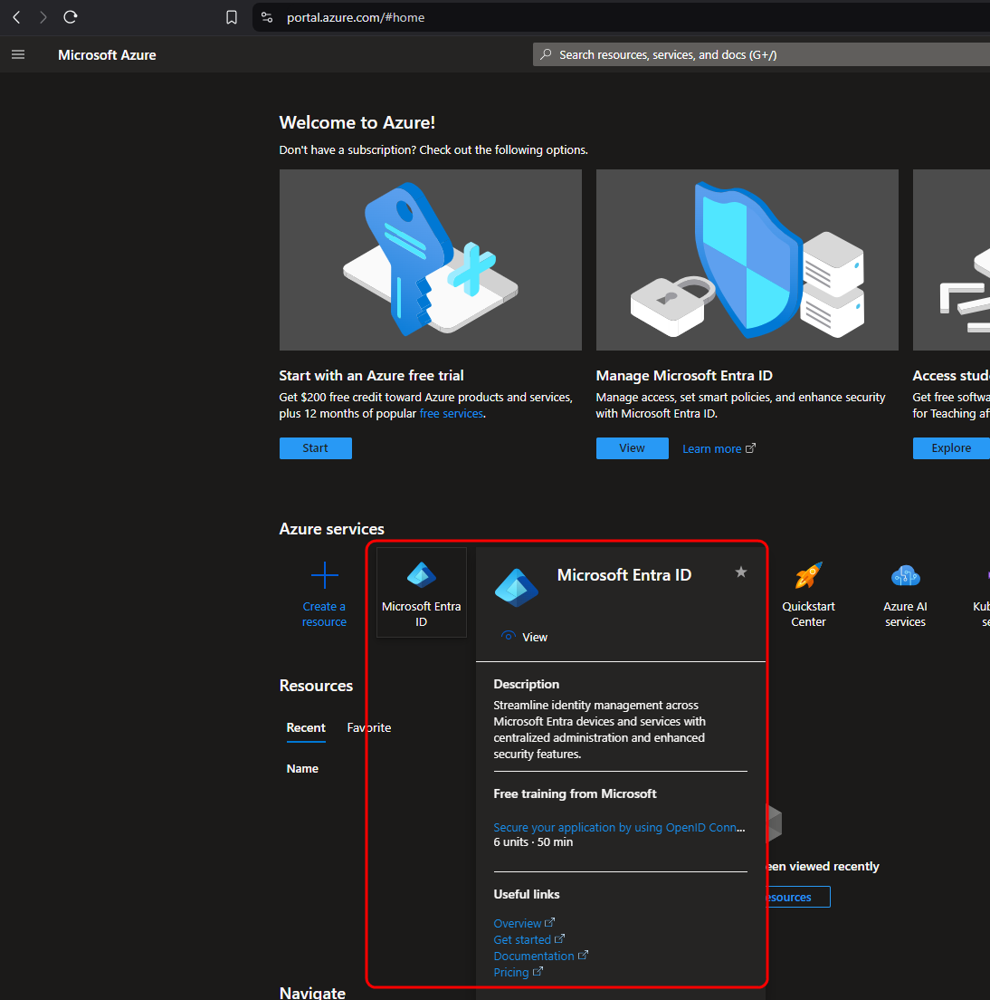
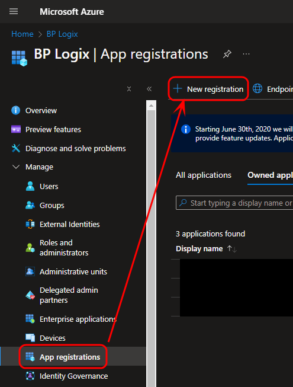
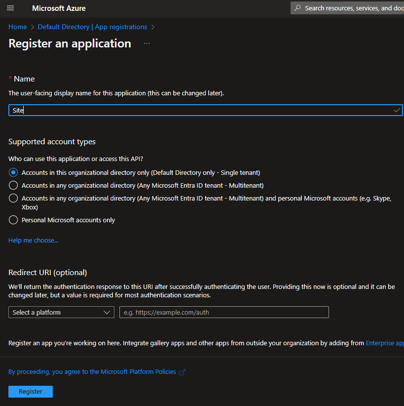
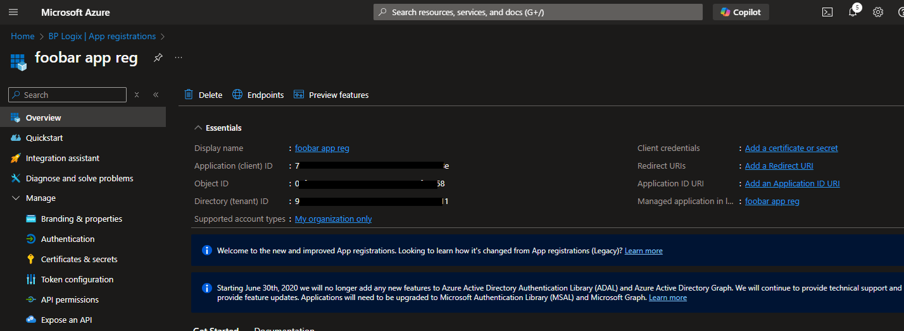
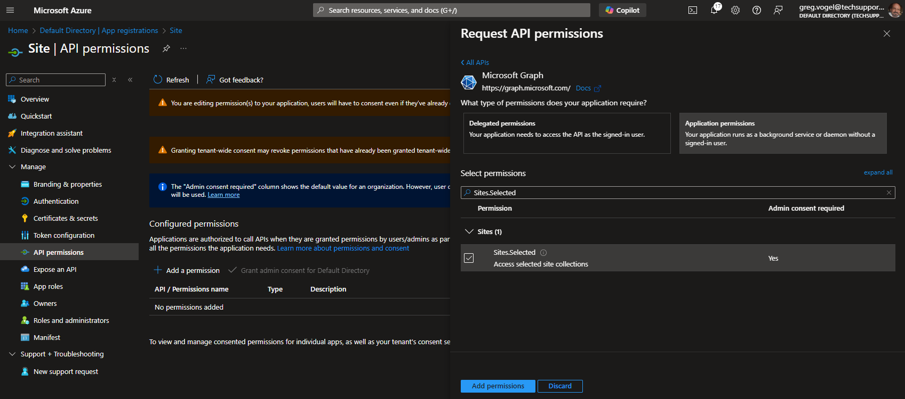
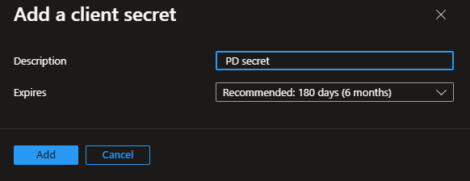

A PDF file for end-to-end Azure/Entra configuration for both SMTP and O365 CDA can be found here: Configuring Azure OAuth (PDF Download)
A PDF file for end-to-end Azure/Entra configuration for both SMTP and O365 CDA can be found here: Configuring Azure OAuth (PDF Download)
A PDF file for end-to-end Azure/Entra configuration for both SMTP and O365 CDA can be found here: Configuring Azure OAuth (PDF Download)
 This topic discusses a product feature in active development, and is subject to change at any time.
This topic discusses a product feature in active development, and is subject to change at any time.
As mentioned at the end of the previous configuration step, you're going to need to refer to the Client Secret, Client ID, and Tenant ID properties of the "Full Scope" App registration. The "Site" level App registration also has the same properties, with the same property names. To avoid confusion dusring the configuration, we'll explicitly refer to these properties as "Full Scope" or "Site" when referring to the property names, e.g., Full Scope Client ID, Site Client ID, etc.
The purpose of the "Site" level App Registration is to enable the Process Director web application server to access your enterprise’s Microsoft 365 (Office Online/O365/SharePoint Online) document storage for the purposes of using it for CDA. The "Site" level application is what CDA will access to enable the use of O365 for the collaborative editing of documents.
To create the "Site" level App Registration, To create the "Full Scope" App Registration, first navigate to the Microsoft Entra ID page of your Azure installation.

From this page, use the navigation bar on the left side of the screen to navigate to the App Registrations page. From this page, click the New registration button that appears at the top of the page.

Set the Name property of the new registration to "Site"(or a suitable name of your choosing but we'll refer to it as “Site” in this document), to distinguish it from the "Full Scope" registration you created previously. Typically, the default setting of the Supported Account Types property is "Accounts in this organizational directory only" is satisfactory and provides optimal security.

You can click the Register button at the bottom of the page to register the application. Once registered, you’ll see the Overview page for it. Note the Application (client) ID and Directory (tenant) ID properties. These values are easily copied when hovering the mouse over each value.
As mentioned in the note at the top of the page, these are same property names that are used in the "Full Site" App Registration, so we'll refer to them as Site Client ID and Site Tenant ID for the remainder of this document. Similarly, we'll refer to the Full Scope Client ID and Full Scope Tenant ID for the same properties used by the "Full Scope" App Registration.

Next, you'll need to click the API Permissions menu item from the left sidebar of the page to open the API Permissions page. You'll need to edit some of the default permissions for this application.
If the user.read permission is shown, you'll need to delete it.
Next, you'll need to click the Add a permission button to open its dialog box. Select Microsoft Graph, then Application Permissions. Once in the Application Permissions section, you'll need to add the Sites.Selected permission to the application.

Once you've done so, click the Add Permissions button at the bottom of the page. Once you do, you'll need to click the Grant admin consent for <Enterprise name> button to confirm the change.
Now that the permissions have been changed, you'll need to create the Client Secret property for the new application. To do so, click the Certificates & secrets navigation menu item on the left sidebar of the page. When the page open, click the New Client Secret button to create a new client secret. You'll need to provide a Name for the new item.
Additionally you'll need to specify when this App Registration will expire, using the Expires property. This property consists of a dropdown control from which you can select how long the Site Client Secret will remain active.
It’s important to take note of the expiration time chosen. The expiration MUST be communicated to BP Logix. Also, you must provide a new Site Client Secret to BP Logix, on an ongoing basis, before the each one expires, to avoid interruptions in service.

Once you've set the Name and Expires properties, click the Add button to create the new Site Client Secret.
Once you click the Add button, you are presented with the secret once and only once. Do not navigate away or refresh the page.
Just as you did previously with the Full Scope Client Secret, click the Copy to clipboard icon and then paste the Site Client Secret into a secure document or file. Keep the file secret, and store it in a safe and secure place, preferably one that is backed up securely.
You must provide BP Logix with the values for the Site Client Secret, Site Client ID and Site Tenant ID properties. In addition, you'll need to provide BP Logix with the SharePoint site URL that will be used to access your enterprise’s SharePoint environment. Keep in mind that these values are sensitive information, so you'll need to provide them to BP Logix via a secure method.
The initial configuration of the "Site" level App Registration is complete. Now you'll need to move to the next step, granting the correct "Site" App Registration permissions.